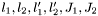

| AChannel | An AZURE channel object |
| ALevel | An AZURE level object |
| AMatrixFunc | A function class to calculate the T-Matrix using the A-Matrix |
| AZURECalc | A function class to perform the calculation of the chi-squared value |
| AZUREFBuffer | A container class for a pointer to a file buffer |
| AZUREMain | The top-level AZURE function class |
| AZUREOutput | A class to assist in writing AZURE output files |
| CNuc | An AZURE compound nucleus |
| Config | A configuration structure for AZURE |
| CoulFunc | A function class to calculate Coulomb functions for positive energy channels |
| CoulWaves | The return structure of the CoulFunc function class |
| Decay | An AZURE decay pair |
| ECIntegral | A function class to calculate external capture integrals |
| ECIntResult | Return structure for ECIntegral function class |
| ECLevel | An AZURE external capture component |
| ECMGroup | An AZURE external reaction pathway |
| EData | An AZURE data object |
| EnergyMap | A container structure for a reference to a data point |
| EPoint | An AZURE data point |
| ESegment | An AZURE data segment |
| GenMatrixFunc | A generalized function class to calculate cross sections |
| Interference | An AZURE  combination |
| JGroup | An AZURE  group group |
| KGroup | An AZURE  group group |
| KLGroup | An AZURE  group group |
| MGroup | An AZURE internal reaction pathway |
| NFIntegral | A function class to calculate the channel integrals in the denominator of the  term term |
| PPair | An AZURE Particle Pair |
| ReactionRate | A function class to calculate the reaction rate |
| RMatrixFunc | A function class to calculate the T-Matrix using the R-Matrix |
| ShftFunc | A function class for negative energy shift functions |
| TempTMatrix | A temporaray T-Matrix structure |
| WhitFunc | A function class to calculate Whittaker functions for negative energy channels |
 1.4.7
1.4.7